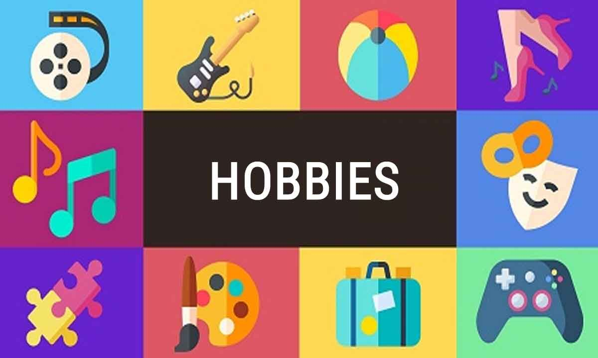

Ik vind verschillende dingen leuk om te doen als hobby. Denk hierbij aan badminton, gamen, fotograferen, Lego
bouwen, muziek maken en wat technische dingen doen.
Ik zit op een badmintonclub in Ouderkerk en speel daar in team 2, waarmee ik dit jaar derde werd in de
competitie. Vorig jaar ben ik met team 1 zelfs eerste geworden in de competitie en derde op het nederlands
kampioenschap (Het
kontakt | Jeugdteam op podium NK). Ik vind het vooral leuk om te spelen, maar ik vind het ook leuk om te
trainen en mezelf te verbeteren.
Ik game wel vaker op mijn computer, vaak minecraft waar ik mijn creativiteit kan gebruiken. Heel vaak doe
ik het ook samen met vrienden, zodat ik kan bijkletsen en ook nog wat gezelligs kan doen.
Als ik de tijd heb, trek ik er ook wel eens op uit met mijn camera en schiet ik wat mooie plaatjes tijdens
een leuke wandeling. Vaak wandel of fiets ik ook veel tijdens een vakantie.
Het thema van de website is wel duidelijk: Lego. Ik bouw graag lego, ook om mijn creativiteit weer te
kunnen gebruiken, maar ook om gewoon lekker bezig te zijn. Ik heb niet veel echte officiele sets, maar ik bouw
vooral met veel losse steentjes die ik heb.
Ik speel zelf piano en een klein beetje gitaar, wat ik ook zeker leuk vind om te doen. Ik hou van liedjes
spelen en ze uit mijn hoofd leren, zodat ik ze ergens anders ook kan spelen.
Ik vind het als laatste ook leuk om wat technische dingen te doen, denk hierbij aan het testen van nieuwe
apparaten of het bouwen van mijn eigen spelletje of circuit met een microbit.

Ik doe vanalles in mijn vrije tijd, zoals de hobby's hierboven, maar ook nog veel andere dingen. Om te
beginnen heb ik leerplicht en moet ik dus aan school werken, maar buiten school vind ik het vooral leuk om met
anderen mensen dingen te doen. Daarnaast teken ik soms en luister ik ook heel veel muziek in mijn vrije tijd
(Luister ook even mee!).
Ook vind ik het leuk om ergens te kunnen helpen als dat nodig is, soms in de vorm van klasgenoten helpen, maar
soms ook in de vorm van helpen bij bijvoorbeeld een bedrijventoernooi bij de badminton.
Naast de bovenstaande dingen vind ik het ook wel eens lekker om gewoon met mijn handen bezig te zijn. Dit
kan van in de tuin te werken, tot iets bakken of koken in de keuken zijn. Ik vind die dingen wel het leukst om
te doen, maar er zijn nog wel andere dingen die ik ook met mijn handen doe, zoals met Lego bouwen.
Als laatste edit ik ook graag video's, dit doe ik vooral met filmpjes die ik zelf heb gemaakt, van
bijvoorbeeld de natuur. Hiernaast vind je een voorbeeld van een heel simpel filmpje dat ik heb gemaakt, van de
zonsondergang.